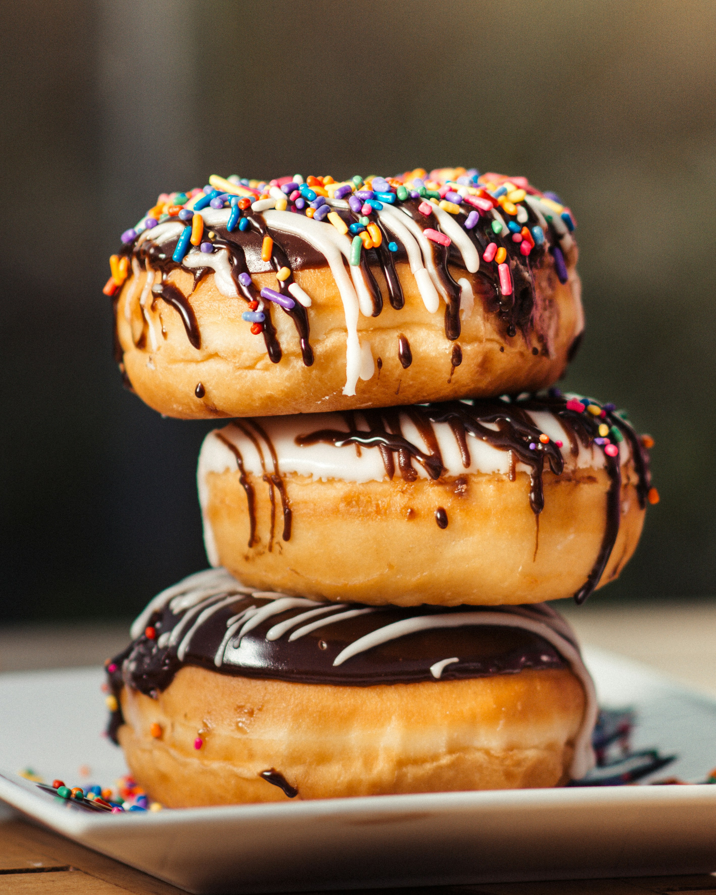

Home
Donut Recipe

Donuts finished following the recipe below
One of the most softest donuts with sprinkles everywhere. Oh I can't forget the chocolate donuts either.
Ingredients
- Flour
- Milk
- Egg yolks
- Yeast
- Sugar
- Sprinkles
- Chocolate
Steps
-
Proof yeast
-
Make donut dough
-
Shape donut dough
-
Allow the dough to rise and double for 1 - 2 hours
-
Cut out 5"x5" squares of parchment or wax paper.
-
Punch down the dough, into a greased surface and cut into many pieces.
-
Cover cut out doughnuts with a clean kitchen towel and allow to rise for 45 min to 1 hour or until doubled in size.
-
Heat 1½ inches oil in a heavy pot (cast iron) to 350F. To fry donuts, drop several of them at a time and allow to become golden before turning to the other side, about 1-2 minutes per side.
-
Transfer to paper towels or wire rack to drain. Let cool.
-
Once the doughnuts are cool enough to handle, roll them in granulated sugar or powdered sugar.